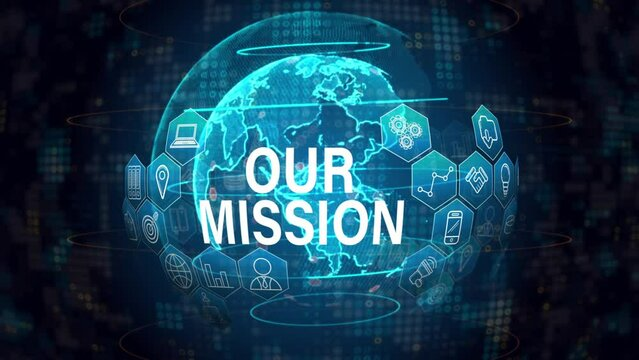
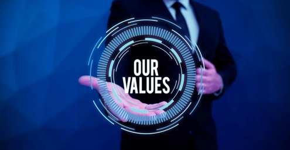
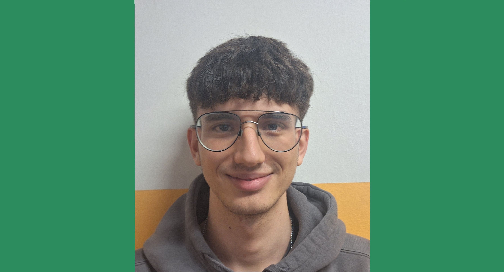

Our school project for a sustainable future
Find out who we are and why we chose to focus on electronic waste and the circular economy
Meet our team
We want to reduce electronic waste through information, awareness, and practical solutions, involving students and citizens in the circular economy.
We imagine a world where electronic devices are designed, used, and reused sustainably, minimizing waste.

Sustainability, innovation, education, and collaboration are the principles that guide us in this school journey.
Student
Passionate about technology,programming and the environment, he takes care of the technical part and the content of the site.

Student
I am dedicated to research and communication, with the aim of raising awareness among young people about electronic waste.
We see electronic waste not just as a disposal problem, but as an opportunity for innovation and awareness. Our project embraces the circular economy with these key actions:
Questioning the linear "produce-use-dispose" model to inspire new solutions.
Extending the life of devices with guides and repair workshops.
Giving a creative second life to electronic devices and components.
Promoting proper recovery and recycling of materials at end of life.